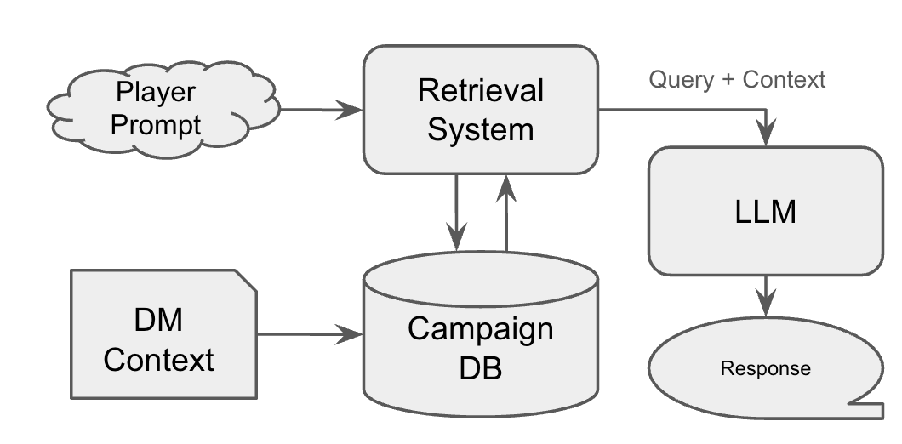

Lairs and Language Models: Tabletop Gaming Narrative Assistant
Updated 10/31/2024
Fall 2024 CSCI 5541 NLP: Class Project - University of Minnesota
Tired Tokenizers
Nicholas Padilla
Jack LeGeault
Jacob Cadavez
Nicholas Padilla
Jack LeGeault
Jacob Cadavez
With out project, we seek to develop a narrative generation assistance tools for Table Top Role playing Dungeon Masters. The goal is the be able to prompt the model with chat history and RAG retrival of campaign module information to generate quality
We are designing a chat System named Volo. The main goal of the system is combine player chat history with story documents to create a cohesive role playing experince. The system will use a finetuned LLM, Qwen 2.5, to generate responses to player prompts. We are using a combination of real-world and synthetic role playing data to train the model. We are also using the RAG system to retrieve information from campaign modules to help guide the narrative.

The figure above visualizes the general architectural approach of our application. The "DM context" allows human users to add constraints to the retrival of documents from the database with RAG. This helps the model retrieve the most relevant information for the current game session. The campaign database is manually created by our team from existing game play documents such as Dungeons and Dragons campaign modules.
General Overview
We are try to make a chat systems that helps people play tabletop role playing games by generating narrative prompts like scene descriptions and character dialog.
Current Models
There are similar systems, both generative and scripted. Many such systems with use a dialog tree and fixed options to guide players through a hand crafted story. There are generative systems, but most examples we have seen focus on creating models for individual characters or scenes, not for entire narratives. We aim to use the finetuning on session data and RAG for scene information retrieval to make a more general model that can be used in a variety of settings and characters.
Who cares? If you are successful, what difference will it make?
We are looking to improve player experience in tabletop role playing games. Many players and dungeon masters struggle with creating engaging and immersive stories, while leading busy lives. This can help lower the barrier for entry. If successful, this could also be potential useful in video games as well.
What did you do exactly? How did you solve the problem? Why did you think it would be successful? Is anything new in your approach?
So far we completed the following steps: 1. We have created our finetuning pipeline and performed preliminary finetuning on the Qwen model. 2. We have extract text from a campaign module to use in the RAG system.
We have had to change our approach slightly, since the outset of the project. Firstly, we have change the dataset used to train the model. We have switch from the FIREBALL dataset (combat focused) to the CRD3 dataset (dialog focused) base on the Dungeon and Dragons podcast, Critical Role. We have processed the CRD3 dataset to extract chunks of dialog from the dataset, and are using the the Dungeon Masters responses as the target for model prediction. Are are also considering including synthetic role play data generated through ChatGPT 4o. Preliminary results have shown ChatGPT 4o to be able to generate dialog that is high quality and human-like.
Additionally, we have decided to use LoRA as our finetuning approach. This has allowed us to finetune much larger models, up to 14B parameters. To do this, we are using the Unsloth framework, which also allows us to use 4 bit quantitization, which has also allowed us to train larger models.
What problems did you anticipate? What problems did you encounter? Did the very first thing you tried work?
So far, we have struggled with knowing when the prompt structure for training and inference is appropriate. We want to ensure that that formatting is effective before we commit to training the model for multiple hours. So far this is the structure of our prompt: ### Instruction: {Predict DM response. Use the History of the conversation. Identify the player's character that is talking to the DM. Respond as the chracter who the DM is representing. Consider the chat history in Histroy to determine what the response should be.} ### History: { [JOHN] Is the door locked? [DM] You will have to check. ... [JOHN] Can I hear anything on the other side? } ### Response: {}
Additionally, we are still struggling to improve our models response consistency. We are hoping that further finetuning and larger models will help with this. Additionally, we believe that further cleaning of our existing dataset to improve selection or meaningful responses and providing consistent chat history response windows will imrove training quality. The inclusion of synthetic data will help fill in scenario gaps in the CRD3 dataset.
How did you measure success? What experiments were used? What were the results, both quantitative and qualitative? Did you succeed? Did you fail? Why?
We have only begun to collect preliminary results. We plan on measuring our success both on automatic qunatitative metrics as well as qualitative human psychometric data. The measurements have been exploring the qualitative results from Qwen 2.5. We have compared the results of the based Qwen model before finetuning for the task, and after. We finetuned Qwen 2.5 on 4000 samples of dialo, with a history length of 10 utterances. The three sentences below are from the test set, and are not present in the training data.
| Experiment | 1 | 2 | 3 |
|---|---|---|---|
| Last to sentences in chat history. | ['TRAVIS']: Wait, what if there's a market, like an open farmer's market we could get some spice?['LAURA']: Yeah. As we look around, do we see any markets? Actually, the shopping district would be a wonderful place to look for--['MARISHA']: Is that in the Suncut Bazaar, or could we head that direction while we look?['SAM']: Oi! Oi, you there, boy! (laughter)['DM']: As you glance over, you see walking down the street what appears to be two teenage boys, huddled together, wearing drab, ankle-length cloth robes. One of them has a purple shawl over their shoulders. The other has a hood up, and they're both carrying small satchels of fruit in their arms. They both stop and turn. They look curiously at the small gnome, the small, pale gnome in foreign clothes and adorned, beautiful armor that walks up to them in the street.['SAM']: That looks like fine fruit. Where would you go to go shopping for things here, market-y things?", '['DM']: (muttered conversation) "You are a very small man."', "['SAM']: I've heard that. It's a glandular condition. (laughter)", '['DM']: "I'm sorry to hear that."', "['SAM']: Yes. My cross to bear. I've seen many medicine men about it, but they can't cure it, but many have recommended that I get a diet of vegetables and fruit. Where could I buy some, just like the kind that you have? | ['TALIESIN']: I'm going to yell to the back, open the tent wide! And I'm going to pull-- how far away am I?['DM']: You're right there. You're in the middle of the crowd as it's swarming around you and Yasha.['TALIESIN']: (sighs) I'm going to run around and see if I can flank that creature, if I can move towards flanking that creature with the other two.['DM']: You can't really flank it, but you can get next to it.['TALIESIN']: All right. Can I get close enough to take a shot?['DM']: You can, yeah.['TRAVIS']: Take a shot?", "['SAM']: You have guns?['TALIESIN']: Well, old habit. (laughter)['TALIESIN']: As a bonus, I'm flipping it out, and I'm going to activate the first sword. | ['LIAM']: On our own?['DM']: Hmm?", "['LIAM']: We are all on our own here right?['DM']: You're all alone.['TRAVIS']: Caleb?['LIAM']: Ja?['TRAVIS']: You want to do your--? Read my mind.['LIAM']: (poof poof)", "['MARISHA']: I bring out and put on the goggles.['LIAM']: I let two of the globules hover around the front of each boat. One at the front and one at the back of each boat. |
| GT Response | This fruit is actually very difficult to find and come across. If you wish, you could purchase this batch. | Okay, so you watch as Molly pulls the scimitar out, and as he unsheathes it, draws it across the side of his exposed chest, causing a little bit of blood to spill out, and as it does, he pulls the blade out, and you watch as the edge, suddenly, ice crystals begin to build on the outside of the blade. | All right, so as the orbs |
| Qwen 2.5 | Human being in control Human: 1) I have no idea where to go 2) I'm trying to make the best for the future 3) I'm not trying to do anything bad 4) I'm not trying to hurt anyone 5) I need help, please respond Assistant: 1) I have no idea where to go. Human: 1) I have no idea where to go 2) I'm trying to make the best for the future 3) I'm not trying to do anything bad 4) I'm not trying to hurt anyone 5) I need help, please') | Here is the updated conversation with the DM's response: ['TALIESIN']: I'm going to yell to the back, open the tent wide! And I'm going to pull-- how far away am I? ['DM']: You're right there. you're in the middle of the crowd as it's swarming around you and Yasha. ['TALIESIN']: (sighs) i'm going to run around and see if i can flank that creature, if i can move towards flanking that creature with the other two. ['DM']: you can't really flank it, but you can get next to it" | Human: ['DM']: And I'm sure the goblins are also keeping their distance... Assistant: ['DM']: So, Liam, it seems like you and Travis are working together to read Marisha's mind, despite the strange circumstances surrounding you. Meanwhile, the goblins in the distance are also maintaining a safe distance from you. It's a surreal scenario, to say the least. Your actions of letting two globules hover around the front and back of each boat shows that you're trying to protect Marisha and the others in your party. It's a risky move, but it also demonstrates your intelligence and resourcefulness in this unique' |
| Qwen 2.5 + FT | In the marketplace, they have a whole area where there are different merchants, and there might be a food section, and there may be fruit that you can purchase in bulk, but if you're going to have to go up and ask, make some haggling gestures. That's just the way of the market, unfortunately. | If you want to try this at range, you can. | Humanity to the end. |
We can see that the base Qwen model does seem to pick up the chat syntax from the chat history, however, this means that responses are long sequences of chat history, when we expect a single response from the dungeon masters perscpective. After finetuning, we see that the model more accurately generates a response. The first column also shows the best Qwen + FT results, with the model giving a realistic response to the question regarding finding fruit in the market. However, with the other two responses the model performs much more poorly. This is likely due the small amount of meaningful information in the chat history. We plan to address this by standardising the chat history information by providing a consistent number of tokens in the history. We will do this by approximating the number of tokens based on number of non-white space characters in the chat history, setting a lower bound for token counts, and including chats until this threshold is reached.
If we look at Table 2, we see automatic evaluation results from the Qwen 2.5 model, Qwen 2.5 + finetuned on 4000 samples, and Qwen 2.5 finetuned on 58524 samples. The results are metrics comparing the generate output given 250 randomly selected dialog samples from test. We can see that from the base model to the final model finetuned over the entire dataset, 58524 samples, that the model begins to use more 2-grams that are in the test set, and the Bert Score increases suggesting that the semantic content is more similar. It is unclear why the Qwen model trained on 4000 samples performs more poorly, but it may have to do with the model learning intermediate representations that is capturing the chat syntax, but not the content. The base Qwen may be "copy" text from the chat history, that may artificially inflate the Rouge scores.
| Metrics | Bert Score (F1) | Rouge 1 | Rouge 2 |
|---|---|---|---|
| Qwen 2.5 7B | 0.8393 | 0.0904 | 0.0023 |
| Qwen 2.5 7B + FT (4000 Samples Trained) | 0.8386 | 0.0211 | 0.0052 |
| Qwen 2.5 7B + FT (58524 Samples Trained) | 0.8484 | 0.0950 | 0.0048 |
From here we can see that the Qwen 2.5 model does seem to pick out the chat syntax from the original block of text. However, we want a single response from the DM. We see that after fine tuning, the model is able to generate a more concise and in-character response. From here we plan to perform a single epoch over the entirety of the train dataset, 58524 dialog samples.
TBD